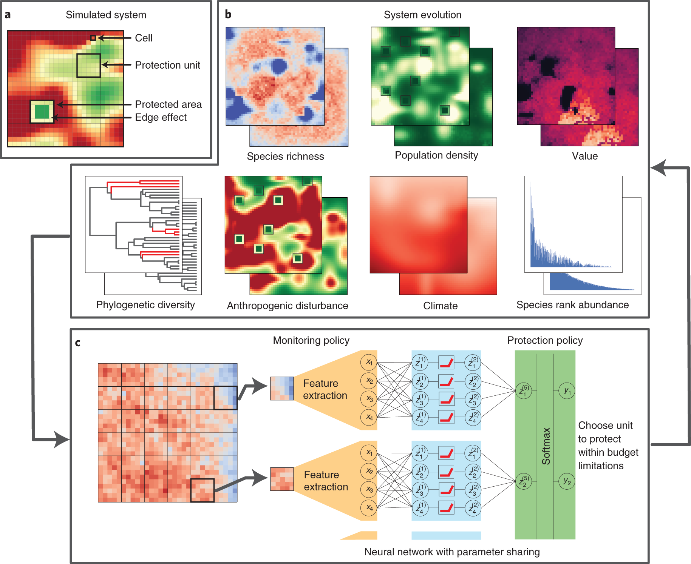

RL Figure Atlas 强化学习绘图素材库
从高质量强化学习论文中，整理 MDP 框架怎样组织、策略怎样解释、结果怎样分析。面向地球系统、资源调控、空间规划与多主体治理，也收录可迁移的控制方法图示。
打开在线图库 · MDP 绘图指南 · 14 类分析图 · 期刊与分区证据
第一辑：16 篇期刊论文，52 条图示参考，35 张 CC BY 完整原图，17 条仅来源入口，10 份原创可编辑 SVG。 核对日期 2026-10-26。期刊 Q1 依据为大学网站托管的 2025 JCR 标题公开汇编，属于二次证据；未宣称已核验中科院一区。

Daniele Silvestro, Stefano Goria, Thomas Sterner, Alexandre Antonelli. Improving biodiversity protection through artificial intelligence. Nature Sustainability (2022), Fig. 1. DOI. CC BY 4.0. 完整原图，未裁切或改写，显示时按比例缩放。
怎么使用
打开 index.html 即可离线浏览，无需安装依赖。在线版可搜索图示、论文、DOI、SHAP 等关键词，按绘图目的、研究主题和是否收录原图筛选；加入“我的选图”后导出带出处和笔记的 Markdown 清单。选图和 MDP 工作台内容保存在当前浏览器中。
每条参考都包含：论文与图号、原图页、中文用途、画法借鉴、解释边界、许可和修改说明。原图是作者结果；中文绘图建议是本库的原创解读。没有把临摹图或虚构数据当作论文原图。
“MDP 工作台”可填写自己的决策者、环境、观测、动作、奖励、约束和时间尺度，导出原创 SVG 与 Mermaid。POMDP 与 CMDP 提供概念提醒，不能代替正式建模与假设检验。
推荐阅读路径
| 要解决的绘图问题 | 先看这些论文与图 |
|---|---|
| 地球系统决策总框架 | CAPTAIN Fig. 1、托卡马克 Fig. 1 |
| 水文水质过程与 RL 耦合 | 调水 Fig. 1、6–9，仅原文图页 |
| 空间 MDP 与图状态 | 城市规划、流场导航 Fig. 1、3、5 |
| 治理者与多主体行为 | AI Economist Fig. 1、4、9、网络化控制 |
| 训练与实际部署 | 无人机 Fig. 2、冷原子 Fig. 4 |
| 风险与约束 | 撕裂不稳定性控制 Fig. 2、4 |
| 学习曲线、消融、泛化 | Dreamer Fig. 4、6、流场导航 Fig. 2、7 |
原创矢量模板
| 模板 | 文件 |
|---|---|
| MDP 闭环 | 01-mdp-loop.svg |
| 部分可观测与信念 | 02-pomdp-observation.svg |
| 约束 MDP 与安全层 | 03-cmdp-safety.svg |
| 多智能体 CTDE | 04-marl-ctde.svg |
| 训练与部署 | 05-training-deployment.svg |
| 世界模型 | 06-world-model.svg |
| 人地耦合与治理 | 07-coupled-governance.svg |
| 分层与时间尺度 | 08-hierarchical-timescales.svg |
| 16 个强化学习图标 | 09-rl-icon-sheet.svg |
| 四面板分析空白布局 | 10-analysis-panel-layout.svg |


资料目录
data/ 保存论文与逐图元数据；figures/ 保存许可允许转载的完整原图；papers/ 保存逐篇中文阅读笔记；evidence/ 保存许可与分区的短证据；references.bib 可导入文献管理软件。原文的在线版与卷期年份可能不同，两者分别记录。
更新与校验
维护者可用 Python 3.10+，安装 lxml、Pillow；重新生成分区证据另需 pypdf。先运行 scripts/inspect_sources.py，再运行 scripts/collect.py；原创模板由 scripts/make_templates.py 生成。运行 scripts/validate.py 检查目录、图片、SVG 和引用一致性。文字笔记改动后，用 Node.js 与 marked 运行 scripts/render_docs.mjs 更新网页阅读版；网页自身不依赖这些包。缓存文件不提交。
GitHub Pages 使用仓库内工作流发布。网页没有追踪脚本、外部字体或前端依赖。参考了 chutj 的 Figure Gallery 的按图索引与逐图来源做法；本站的界面、代码、笔记和模板独立制作。
许可
代码 MIT；原创文字和 SVG 模板 CC BY 4.0；第三方原图保留各自版权与逐图许可。仓库没有统一授权外部论文图片。 ND 或授权不明确的论文只链接，不在此转载或裁图。详情见 RIGHTS.md 与 LICENSE。